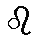
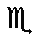
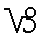
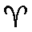
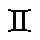

INTRODUCTION
Le sonnet chez Michel Galiana est une structure
très stricte composée de 14 vers de 12 ou 11 pieds
répartis en 2 quatrains suivis de 2 tercets.
Pour les rimes, il s'impose parfois une sujétion non
prévue dans le schéma fixé par Théodore de Banville
(ABBA ABBA CCD EDE), en s'obligeant à reprendre les
rimes du premier tercet dans le second, tout en en
modifiant l'arrangement:
ABBA ABBA CDC DDC, ABBA ABBA CCD DCD,
ABBA ABBA CCD CDD, etc...
Ici, l'auteur complique encore l'exercice en
s'imposant les contraintes suivantes:
-Chacun des 12 premiers sonnets, décrivant un des
travaux d'Hercule, contient, sous une forme propre
ou dérivée, le nom d'un signe zodiacal, dans
l'ordre, en commençant par le Lion (en MAJUSCULES).
-S'inspirant, peut-être, des "Fables Egyptiennes et
Grecques dévoilées" de Joseph-Antoine Pernety
(1716-1801), il énonce dans les strophes de trois lignes
une opération (parfois plus) du Grand Oeuvre des alchimistes,
sans doute en rapport avec le signe zodiacal
(italiques) et censée interpréter chacun
des travaux.
-Il multiplie les évocations des 4 éléments,
ici repérées par des couleurs: rouge, le feu ;
bleu, l'eau; vert, l'air; marron, la terre, et
l'atmosphère de chaque poème est alternativement solaire
(lumineuse) et lunaire (ténébreuse).
En se reportant aux commentaires sur la gravure
de Mérian "La Table d'Emeraude" (cliquer sur
l'image), on pourra trouver sans doute bien d'autres
allusions à la science alchimique ou corriger
les interprétations fautives du traducteur
(Odi prophanum vulgus et arceo)!
I Le Lion de Némée Lion  Calcination
II L'Hydre de Lerne Vierge  Dissolution
III Le Sanglier d'Erymanthe Balance Dissolution
III Le Sanglier d'Erymanthe Balance  Séparation
IV La Biche aux pieds d'airain Scorpion Séparation
IV La Biche aux pieds d'airain Scorpion  Conjonction
V Les Oiseaux du Lac Stymphale Sagittaire Putréfaction
VI Le Taureau de Crête Capricorne  Congélation
VII Les Cavales de Diomède Verseau Digestion
VIII La Ceinture de l'Amazone Poisson  Sublimation
IX Les Ecuries d'Augias Bélier Sublimation
IX Les Ecuries d'Augias Bélier  Fermentation
X Le Troupeau de Géryon Taureau Distillation
XI Les Pommes des Hespérides Gémeaux  Multiplication
XII Hercule aux Enfers Cancer Projection
Oeta
|
INTRODUCTION
Michel Galiana's sonnets have a strict structure
made up of 14 verses of 12 or 11 feet, grouped
together into two quatrains followed by two triplets.
As to the rhymes he sets himself a constraint the
theorists of French sonnet, had shunned when they
laid down the diagram:(ABBA ABBA CCD EDE).
Michel makes here a point of using the same rhymes,
arranged in different ways in both tercets:
ABBA ABBA CDC DDC, ABBA ABBA CCD DCD,
ABBA ABBA CCD CDD, etc...
To make the exercise more thrilling, in this set
of 13 sonnets he devised additional constraints:
-Each of the first twelve sonnets, picturing one
of Hercules' labours contains the explicit or
allusive name of a zodiac sign, in chronological
order beginning from the Lion (in CAPITAL letters).
-Possibly in accordance with the "Egyptian and
Greek Fables Unveiled" by Joseph-Antoine Pernety
(1716-1801), the last triplets quote an operation
(sometimes more) pertaining to the Work of the alchemists, very
likely in connection with the zodiac sign of the
poem (in italics) and supposed to be an
interpretation of each Labour.
-He repeatedly evokes the four elements, here
printed in colours: red=fire, blue=water, green
=air, brown=earth and each individual sonnet
bathes alternately in a solar (bright) and a lunar (dark) atmosphere.
When referring to the comments on Merian's
engraving "The Emerald Tablet" (click on the
picture), one will certainly find plenty of other
hints at the alchemist's craft or correct the
translator's faulty interpretations
(Odi prophanum vulgus et arceo)!
I The Nemean Lion Leo Calcination
II The Lernan Hydra Virgo Dissolution
III The Erymanthian Boar Libra Separation
IV The Hind of Ceryneia Scorpio Conjunction
V The Birds of Lake Stymphalus Sagittarius Putrefaction
VI The Cretan Bull Capricorn Congealing
VII The Mares of Diomedes Aquarius Digestion
VIII The Belt of the Amazon Pisces Sublimation
IX The Augean Stables Aries Fermentation
X The Cattle of Geryon Taurus Distillation
XI The Apples of the Hesperides Gemini Multiplication
XII Hercules in Hell Cancer Projection
Oeta
|
"Or il advint qu'après la bataille avec les
Minyens, Hercule fut frappé de folie par Héra, en
proie à la jalousie, et qu'il précipita ses propres
enfants qu'il avait de Mégare et deux enfants
d'Iphicles dans les flammes, ce pourquoi il se
condamna lui-même à l'exil et fut purifié par
Thespius. Retournant à Delphes il demanda aux dieux
quel devait être son nouveau séjour. La Pythie lui
donna alors pour la première fois le nom d'Hercule,
lui qu'on avait jusqu'alors nommé Alcides. Elle lui
dit de demeurer pendant douze ans à Tiryns et
d'exécuter les dix travaux que lui imposerait son
cousin, le roi Erysthée. Une fois, dit-elle, ces
tâches accomplies, il accéderait à l'immortalité."
(Apollodore "Librairie et Epitomé")
"(Hercule) est aussi le nom que les Alchymistes
donnent à leurs esprits métalliques, dissolvants,
digérants, sublimants, putréfiants et coagulants.
Ils regardent les travaux dHercule comme le
symbole du grand oeuvre, ou des opérations de
la pierre philosophale."
(Pernety "Fables dévoilées")
|
"Now it came to pass that after the battle with
the Minyans, Hercules was driven mad through the
jealousy of Hera and flung his own children, whom
he had by Megara and two children of Iphicles
into the fire, wherefore he condemned himself to
exile, and was purified by Thespius and repairing
to Delphi he inquired of the god where he should
dwell. The Pythian priestess then first called him
Hercules, for hitherto he was called Alcides.
And she told him to dwell in Tiryns for twelve
years and to perform the ten labours imposed on
him by his cousin, King Eurystheus, and so, she said,
when the tasks were accomplished, he would be immortal."
(Apollodorus "Library and Epitome" Translation by
James Frazer)
"(Hercules) is also the name given by the alchemists
to their metallic spirits: solving, digesting,
sublimating, putrefying and coagulating spirits.
They look upon the Labours of Hercules as on the
symbol of the Great Work or the operations of the
Stone of the Philosophers."
(Pernety "Fables Unveiled")
|